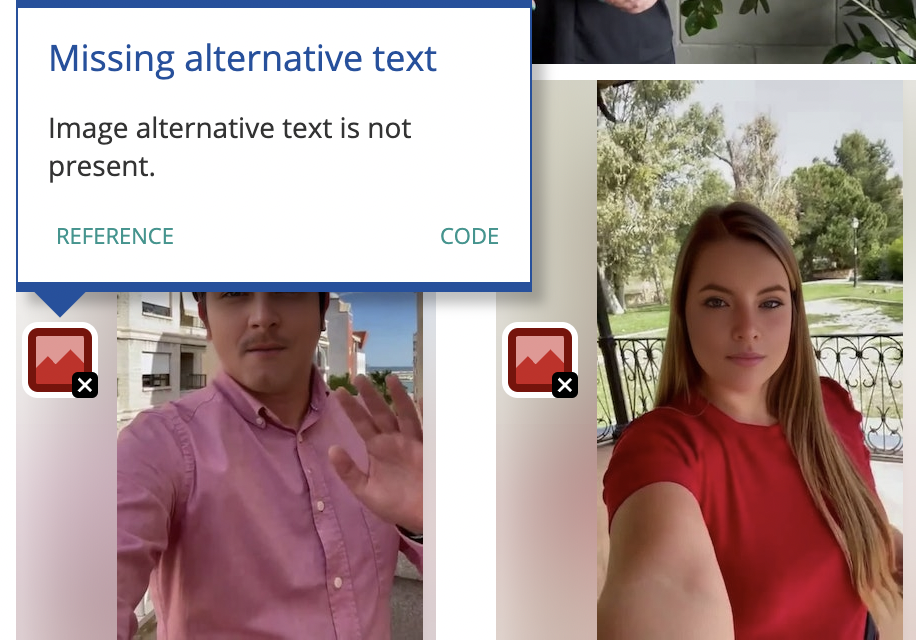
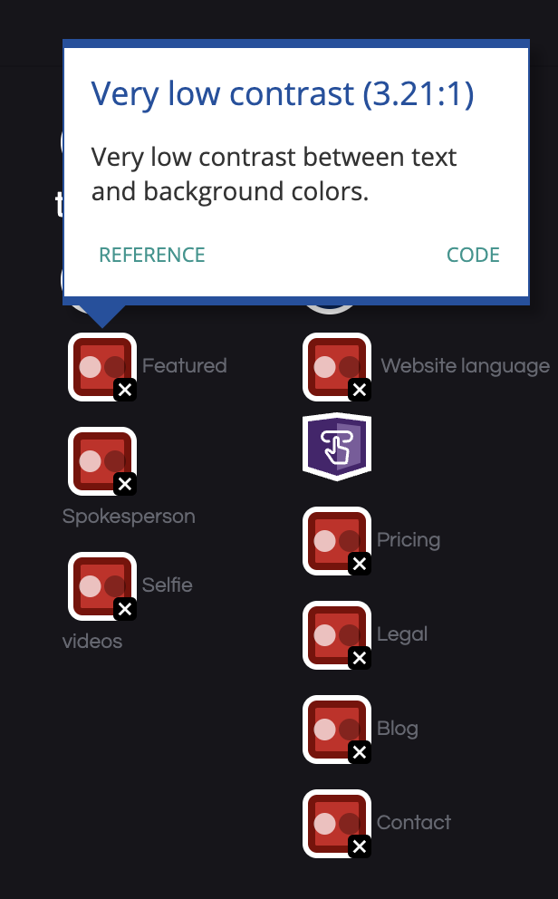
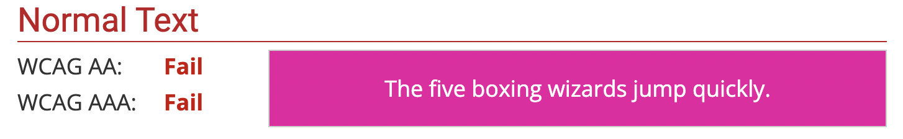

For this task, I found a generative AI website, which allows people to create videos using AI actors, called Neural Actors.
The website is said to have a plethora of errors, 26 of which are missing alternative text, form labels, or a missing link. Alternative text is important as the content of an image will not be accessible to screen reader users or when the image is missing. Additionally, form labels are important for screen reader users to know the function or purpose of that form control.
The website also has 22 contrast errors. An adequate contrast of text and background is essential for every webpage for all users, especially those who are visually impaired. In my example, there is grey text against a black background on the bottom navigation page. This could be easily fixed by making the text white, thus, increasing the contrast.
Finally, there are a total of 15 alerts, ranging from underlined non-linked text to video content without a transcript/subtitles. Underlined text usually indicates a link and it is recommended to use alternative styling methods, such as bold or italics. There are additional alerts regarding the structure of the page, such as skipping a header level (which provides structure and facilitates keyboard navigation) and visibility issues, such as too small text for the website's copyright.
After inspecting the website's code, I was able to retrieve RBG values and convert them to hex. A majority of the page used white and black, colours which contrast well, so I focused on the other colours I could locate. Most of the buttons on the page used #ed04a3, a bright pink colour, as the background of white text. WCAG 2.0 level AA requires a contrast ratio of at least 4.5:1 for normal text, and these colours had a contrast ratio of 4.07:1, meaning they failed to fully comply with web accessibility guidelines.
The Readability Test Tool gave the Neural Actors website a 68.2 of 100, which means that it should be easily understood by 11 to 12 year olds. When I'm creating my own website, I would also like to have a score over 50, so it is accessible for a range of ages.
Looking at all of the information analysed above, it seems as though the Neural Actors webpage contains an average amount of errors, which is 50.0 errors per page according to The WebAIM Million. The main errors I found were alternative text errors, form labelling errors, and contrast errors. While it seems that these mistakes are present on many websites, it is important to consider them when trying to meet accessibility standards and guidelines. On my own current webpage, while I have not been overtly considering accessibility, there are a few elements that I have happened to include or that have emerged organically. Some of these include alternative text, a heading structure, and high text contrast and good sizing. After reading about the importance of alternative text, I do think that I could add more detail to these descriptions in the future. I don't think I currently have any empty/broken links, but it is important to practice version control and continuously update your webpage to make sure everything is always working.
Where subtitles only convey the dialogue and narration happening in a video, captions also include any audio effects that may be present. This article and video provided me with more information on the benefits subtitles and CC can provide for many users, not just those who are hard of hearing. For example, if someone is in a noisy environment, CC could be useful to hear what is happening on the screen.
I generated my own WebVTT file and added CC to my video from Week 9.
There are many ways I can improve upon accessibility when I build my website next semester. While I have implemented alt text into my portfolio, I think I need to work on how detailed and specific it is. I found a useful article on HubSpot, providing good and bad examples of different alt text. For example, "Baseball player hitting a ball at a baseball field" is not as descriptive as "David Ortiz of the Boston Red Sox batting from home plate at Fenway Park." I want to ensure that all of the alt text on my webpage is not only meeting accessibility standards, but also that it is done well. Additionally, while it was difficult with the portfolio as I had to provide screenshots of outside websites, I want to ensure that I don't include images of text in my website. Images of text are not only bad for SEO, but for screen readers and quality between devices. Finally, I want to keep my content simple to understand. For my portfolio, I had to include a lot of text information and did not focus my efforts towards making my webpage fully appealing and aesthetic for users. I want to improve upon this and add additional elements, like a navigation menu and more buttons, in my actual website. I'll use shorter sentences and ensure nothing is too wordy.